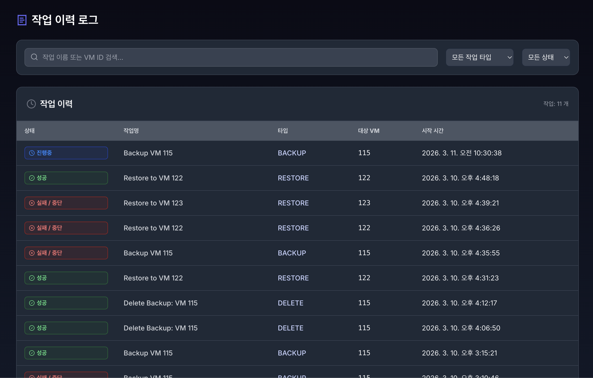

6. 작업 이력 (status)#

“누가, 언제, 어떤 작업을 했고 결과가 어땠는지”를 투명하게 기록하고 추적하는 PBS 전용 감사(Audit) 페이지입니다.
6.1. 작업 이력 목록#
상태 뱃지 (Status Badges) :
모든 작업은 진행 중(RUNNING), 성공(SUCCESS), 실패(FAILED) 3가지 상태로 직관적인 색상 뱃지로 표현됩니다.
작업 타입 필터링: :
단순한 백업(BACKUP)뿐만 아니라 복구(RESTORE), 삭제(DELETE) 등 모든 시스템 액션이 누락 없이 기록됩니다.
드롭다운 필터를 통해 원하는 작업 타입만 모아볼 수 있습니다.
강력한 예외 감지: :
네트워크 단절이나 관리자의 Proxmox 수동 중단 등으로 작업이 예기치 않게 종료되더라도, VirtOn 폴링(Polling) 엔진이 이를 감지하여 작업 이력을 FAILED로 자동 업데이트합니다.
검색 및 페이지네이션: :
VM ID나 작업 이름으로 특정 기록을 빠르게 검색할 수 있으며, 클라이언트 사이드 페이지네이션을 통해 대량의 로그도 쾌적하게 탐색할 수 있습니다.